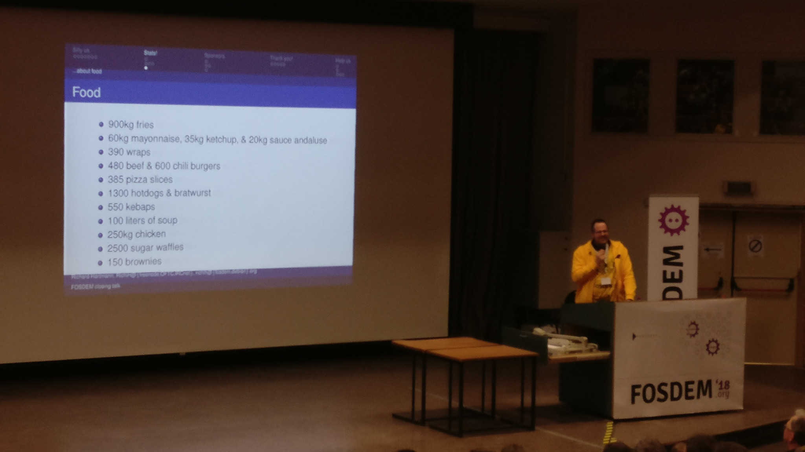
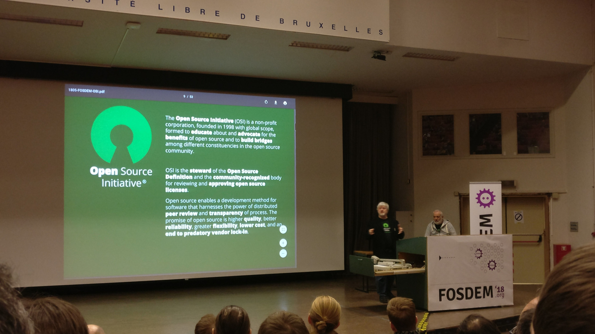
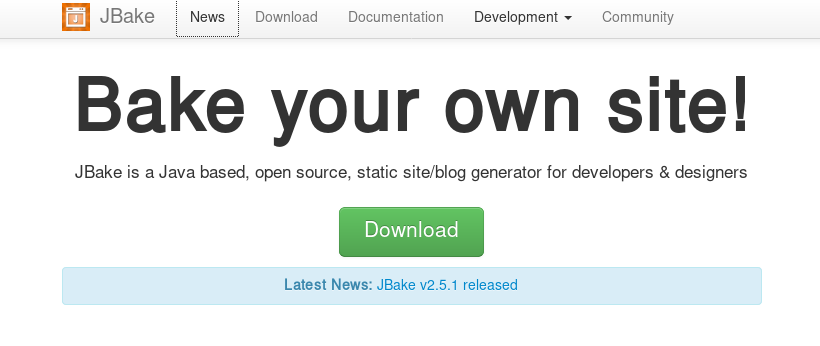

Tag: programming

Incredible statistics related to food at FOSDEM 2018
After an interesting Saturday, finished with a great dinner with some friends in one of our favorite restaurants in Brussels, my Sunday at FOSDEM started again very early.
My choices for the Sunday were again diverse and (in most cases) successful. Apart from the closing keynotes, I spent some time in the Legal and Policy Issues devroom, a couple of talks in the HPC, Big Data, and Data Science devroom and half the afternoon in the Geospatial devroom.

Simon Phipps speaking about the Open Source Initiative (OSI) in FOSDEM 2018
After an uncertain landing a few hours ago (the airport in Madrid was barely working due to a snowy morning), I've just arrived home but instead of having some rest after an intense and though-provoking FOSDEM I felt the urge to start writing about my weekend in Brussels.

The final overview of the modular JDK, by Mark Reinhold @
Twitter
A couple of days ago DZone published an article called 9 Things Java Programmers Should Learn in 2018. I liked the idea and I even recommended the article to a couple of colleagues who are trying to reorient their professional career. After the advice I added some personal disclaimers about the content, to the point that one of my friends wisely told me: "if you don't agree with these recommendations, why don't you write your own article?"
...and that brought us here :-)
Last week I attended Big Data Spain, a renowned event focused particularly on Big Data, Artificial Intelligence and Machine Learning. It's a reference event about Big Data, not only in Spain but across Europe. The event is almost entirely held in English and attracts top level speakers and public.
I couldn't take a lot of notes, but I'll summarize the talks that deserve your attention
For many different reasons I have had to discuss quite a lot recently about the professionalism of some people. Sometimes, because a person feels that she (I will use the feminine as neutral gender) is not being treated fairly with respect of her category, or because her performance is disappointing for others, sometimes after unfair comparisons between colleagues, ... As a common element, a diabolical concept was almost always being misused in these situations: Seniority

Map status of the ING CTF competition with less than 22h left
Last week I had the huge pleasure to participate in a week-long Security Summer Camp organized by the Information Security department of ING Spain. The agenda was very promising and implied some theory and lots of practice, ending with an Escape the Room game and a 2,5 days long Capture The Flag competition. Several speakers from the Infosec Squad prepared talks and workshops about different topics, focusing on Ethical Hacking, secure development, server hardening or OSINT.

Almost since I created my personal blog in 2003 I thought about moving it from blogger to my own domain, private hosting and so on. My lazyness prevented me from doing so. Not because the migration itself, but for the maintenance it entailed.
Anyhow, I was determined to migrate my blog outside of any blogging platform. I wanted to have complete control over my content, but without wasting lots of time in maintenance. All I needed was a way to do it seamlessly, quickly, and as automated as possible.
This week I attended, as usual since I don't remember when, to Greach 2017, an international conference about the Apache Groovy language and ecosystem. Greach is held each year in Madrid but everything is in English, and nowadays it's probably one of the Top3 worldwide events about this technology.
Para mantener la buena costumbre (ya, lo sé, no siempre cumplo), voy a relatar brevemente mi experiencia durante Codemotion 2016, uno de los eventos sobre informática y programación más importantes del país. No hay números oficiales definitivos pero en la clausura la organización comentó que hubo más de 2.000 asistentes y más de 150 charlas/talleres. Suelo asistir todos los años, hay otros eventos más potentes e interesantes para tecnologías concretas pero como evento generalista donde puedes ver y oír de todo creo que Codemotion hoy en día no tiene rival (al menos en España).
This last weekend I had the opportunity to attend Greach 2016. Greach is an international conference about the Groovy language and ecosystem, it's hosted here in Madrid but the conference is 100% in English to successfully attract top speakers and attendees. This was the 5th edition of the conference, consolidated as one of the biggest events worldwide about Groovy.
Our FOSDEM Sunday ended being much like the day before. A large majority of the talks I attended were in the Legal and Policy Issues track.
After an interesting Friday (as I told you yesterday) our FOSDEM Saturday started early. I attended a couple of talks in the Free Java DevRoom, another couple about Open Source Design but surprisingly most of them were in the Legal and Policy Issues track.
As you may know if you are reading this, FOSDEM is a not to be missed event about Free and Open Source Software (FOSS). By far, it is the most important gathering about FOSS in the planet. It's an unbeatable opportunity to attend great talks and workshops, but also to hang around with amazing people and top professionals.
Algunos recordaréis (y los que no, ya lo sabéis) que en Julio del pasado año tuve el placer de participar en la PiWeek (Personal Innovation Week), una iniciativa muy interesante por parte de Kaleidos (una empresa madrileña orientada al software libre con la que tengo únótimë lazos). Esta iniciativa consiste en permitir cada seis meses que durante una semana completa todos los empleados de la empresa organicen y participen en proyectos totalmente personales (suyos o de otro compañero).
Por fin saco un rato, con un mes de retraso, para hablar del evento Spring I/O 2012. A estas alturas lo fácil habría sido dejarlo estar, pero en mi empresa me han recordado que por algo me "designaron" como representante y autorizaron mi asistencia. Como primer paso para compartir lo vivido con mis compañeros (en forma de presentación si sacase tiempo), dejaré aquí un resumen de las notas que tomé. Omitiré en el blog las anotaciones más técnicas.